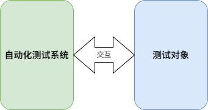
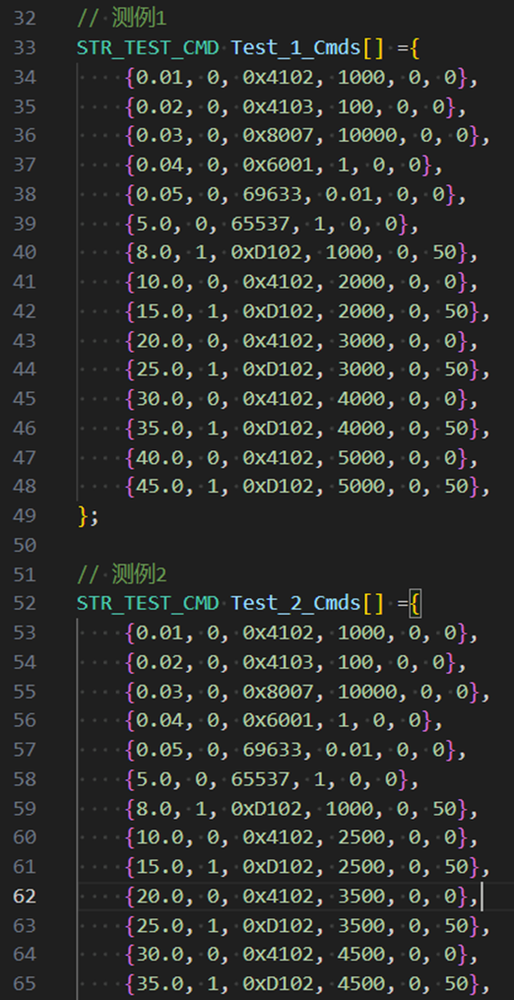
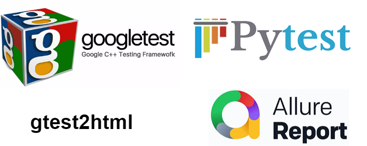
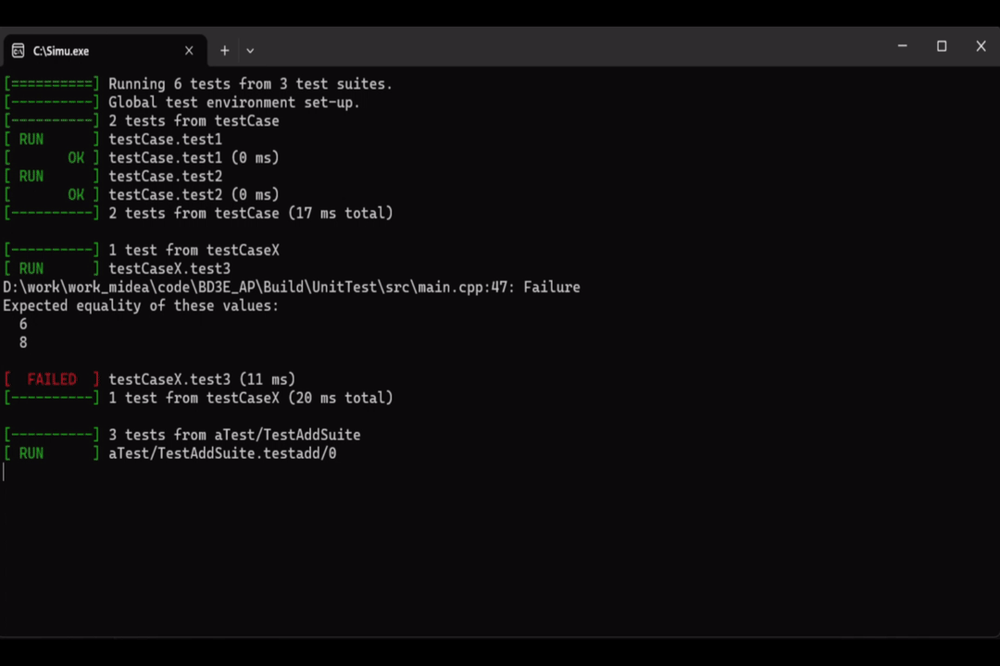
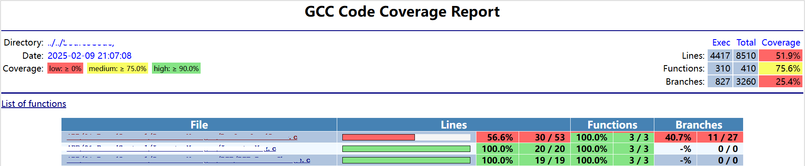

软件测试是一项繁琐的工作，人工测试耗时长、效率低而且容易出错，如果能够实现自动化测试，就可以提高测试效率，从而提高软件质量。自动化测试系统，其实就是将人工测试的步骤编写成脚本，计算机根据脚本执行，然后根据测试数据判断结果是否符合预期。下面将对如何进行自动化测试进行简单介绍。
自动化测试系统，首先要能够实现与测试对象交互，也就是可以控制测试对象按照指令运行，同时可以获取测试对象反馈的状态。如果测试对象为实物，则可以通过Modbus、CAN等接口进行交互，如果测试对象为软件代码或动态链接库等，则可以通过相应的软件接口实现交互。

测试用例能够准确地描述测试步骤和断言方法即可，对形式并无具体要求，可以使用Excel表格、CSV文件甚至c语言代码等。将所有测试按照统一的方法编写成测试用例，方便测试系统进行读取并执行。下图为c语言编写的测试用例，具体含义这里不展开介绍。

可以使用常用的google test和pytest测试框架，利用其中的断言方法，在测试用例执行完毕后自动生成测试报告。对于pytest，可以使用allure生成美观的测试报告；对于google test，可以使用gtest2html等工具生成网页版的测试报告。

下图为使用google进行自动化测试的动画演示。

如果是对代码进行测试，还可以生成代码覆盖率报告，如下图所示。
